Copyright ©1995 by NeXT Computer, Inc. All Rights Reserved.
| 6 |
The Icon Builder Application
| 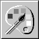 |
| The Icon Builder application is a simple yet effective tool--either alone or in combination with a more powerful drawing application--for creating application icons. Although Icon Builder itself isn't intended to be a full-featured drawing application, it offers not only integration with other drawing applications, but also the ability to create and edit multiple-icon documents.
You can start Icon Builder (located in /NextDeveloper/Apps) from the workspace as you would any other application, by double-clicking its icon in the workspace. When Icon Builder starts up, it displays a panel of tools used to edit icon documents. |
| Creating, Opening, and Saving Documents |
| When Icon Builder starts up, it creates one new Icon Builder window using the default Preferences settings. You can create additional Icon Builder windows as you need them, as described in the following section.
Creating a New Document To create a new document, choose the New command in the Document menu. This creates a document with the default attributes (typically, the document contains a single 48-pixel by 48-pixel, non-alpha, 2-bit gray image with a white background). You can change the attributes of the document after it's been created, as described later in the section "Changing the Attributes of a Document." To create a new document with nondefault attributes: |
| 1. | Bring up the New Document panel by choosing the New Layout command in the Document menu. |
| 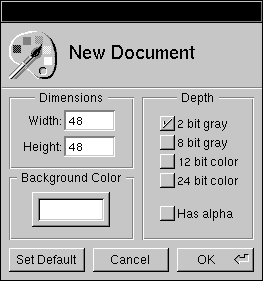 |
| 2. | Set options in the New Document panel, and then click OK to create a new document. If you want to change the default attributes for all documents created with the New command, click Set Default instead. |
| For example, if you want to create an icon for use on both color and black and white displays, you would check the "2 bit gray" box as well as the "12 bit color" box ("8 bit gray" and "24 bit color" could also be used). Check the "Has alpha" box if you'll be using alpha. To change the background color, pick a color in the Colors panel (accessed in the Tools menu) and drag the color into the Background Color color well.
Opening an Existing Document To open an existing document, choose the Open command in the Document menu and use the Open panel to find the document. The document you open may be an icon you're working on, or it may simply contain an image that you want to copy a selection from in order to paste it into another document. In addition to TIFF files, Icon Builder can open GIF and EPS files.
Saving a Document To save a document to a file, choose the Save command in the Document menu. If the document hasn't been saved yet, a Save panel appears prompting you to specify a name and location for the file. Even if the file you're saving was opened as something other than a TIFF file (a GIF file, for instance), it will be saved as a TIFF file. Icon Builder saves TIFF files in uncompressed format, so before making the file part of your application project, you should use the tiffutil utility to compress the file. See the tiffutil(1) UNIX manual page for more information. |
| Editing Icon Documents |
| This section describes various ways to edit an icon document, including the set of Icon Builder tools and an inspector for fine-tuning those tools. Other editing techniques described involve zooming in and out, changing the attributes of a document, and working with multiple-icon documents.
Standard cut, copy, and paste techniques can also be used, although these aren't described here.
Using Icon Builder Tools A variety of drawing tools are available and accessible from the Tools panel, which appears automatically when you start Icon Builder. If you close or misplace the panel, you can retrieve it by choosing the Tools command in the Tools menu. To use a tool, select it by clicking its icon in the Tools panel. Once you've selected a tool, use it to edit the contents of the document window. Note: When using the Tools panel, you should have the Colors panel open as well. All the drawing tools draw using the color (or shade of gray) that's currently displayed in the Colors panel. You can also use the Colors panel to specify the degree of alpha coverage (that is, opacity), as well as whether or not painting is done in overlay mode. The following paragraphs describe the tools on the Tools panel. |
| The Brush tool is useful for filling in large areas with a particular color. Click once to deposit a brushful of color, or click and drag to cover a larger surface area. |
| The Line tool draws straight lines. Click to mark the start point, and drag to the end point. The line you see being drawn as you drag is only for guidance--the final line is drawn only when you release the mouse. |
| The Oval tool draws circles and ovals. Click and drag to determine the position, size, and shape. It's hard to predict the start and end point with accuracy, so you may want to use another document window as a scratch area and then copy and paste the oval once you're satisfied with it. |
| The PaintBucket tool changes the color of a contiguous, identically colored group of pixels. The color they're changed to is the color that's currently in the Colors panel. Before using the PaintBucket tool, you may want to use the ObeseBits panel to be sure that all the pixels are in fact identical in color--if minor gradations in color are used to achieve the appearance of a particular shade, the new color won't spread from pixel to pixel. |
| 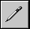 |
| The Pencil tool draws freehand lines. Click to start the line, and drag to indicate the path of the line. Unlike the Line tool, the Pencil tool draws the final line as you drag. If you don't like the result, use the Undo command in the Edit menu to undo it. |
| The Rectangle tool draws squares and rectangles. Click to position a corner point, and then drag in any direction to form the rectangle. |
| The Selection tool selects a rectangular area for further editing. For example, after selecting an area you might go on to copy the selection to the pasteboard, or even delete the selection. |
| The Text tool is used to add text to an image. If you select the Text tool and then click the cursor in a document window, the contents of the TextTool inspector (by default, the word Text--probably not what you want in your icon!) are copied to the cursor location. As long as you don't release the mouse button you can drag the text to reposition it, but once you let go the text becomes fixed in that position.
In order to use the Text tool effectively, you should first enter the desired text in the TextTool inspector. Set the font attributes and font size as you wish. Then use the Text tool to insert the text in the document window, or--to be on the safe side--insert the text first in a temporary scratch document, and then cut and paste the text into the document window. Other tools besides the Text tool have default attributes that you can change using the Tools Inspector, as described in the next section.
Using the Tools Inspector The Tools inspector is a panel that gives you greater control over the characteristics of the tools available in the Tools panel. To bring up the Tools inspector, choose the Inspector command from the Tools menu. To display the inspector for a particular tool, click the tool's icon in the Tools panel. Note: There is no inspector available for the PaintBucket tool.
The Brush Inspector The Brush inspector appears in the Inspector panel when you select the Brush tool in the Tools panel. |
| 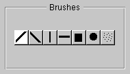 |
| Click a button to change the shape and orientation of the brushstrokes you make.
The Line Inspector The Line inspector appears in the Inspector panel when you select the Line tool in the Tools panel. You can use this inspector to change the width and end shape of the lines you draw. |
| 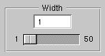 |
| Use the slider or the text field to set the line width to any value between 1 and 50 pixels. |
| 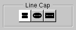 |
| Click one of the three Line Cap buttons to determine how the ends of lines are drawn. The setting becomes less critical as the line width decreases--a one-pixel line is drawn the same no matter what style of line cap is selected.
The Oval Inspector The Oval inspector appears in the Inspector panel when you select the Oval tool in the Tools panel. |
| 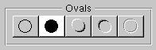 |
| Click one of the five buttons to change the appearance of the circles and ovals you draw.
The Pencil Inspector The Pencil inspector appears in the Inspector panel when you select the Pencil tool in the Tools panel. You can use this inspector to change the width of the freehand lines you draw. |
| 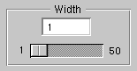 |
| Use the slider or the text field to set the line width to any value between 1 and 50 pixels. Thicker lines cause the drawing speed to decrease, so you may need to move the mouse more slowly in order for the drawing process to keep up with it.
The Rectangle Inspector The Rectangle inspector appears in the Inspector panel when you select the Rectangle tool in the Tools panel. You can use this inspector to change the appearance of the squares and rectangles you draw. |
| 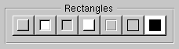 |
| Click one of the seven buttons to change the appearance of the squares and rectangles you draw.
The Selection Inspector The Selection inspector appears in the Inspector panel when you select the Selection tool in the Tools panel. You can use this inspector to change the orientation of (that is, flip or rotate) the current selection. |
| 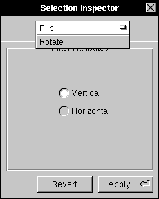 |
| Choose Flip or Rotate in the pop-up list at the top of the panel. The available options vary depending on which you choose. |
| 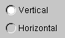 |
| If you choose Flip, you'll see these Flip filter attributes. Click either Vertical or Horizontal to indicate the direction in which you want the selection to be flipped. |
| 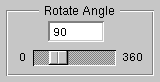 |
| If you choose Rotate, you'll see these Rotate filter attributes. Specify a value between 0 and 360 using either the slider or the text field. This value represents the number of degrees the selection will be flipped in a clockwise direction. |
| 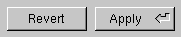 |
| Once you've selected the options, click Apply to flip or rotate the selection. If you don't like the results, click Revert to return the selection to its former orientation.
The TextTool Inspector The TextTool inspector appears in the Inspector panel when you select the Text tool in the Tools panel. You use this inspector to input the text to be inserted in the document window, as well as to change the font attributes and formatting of the text prior to inserting it. |
| 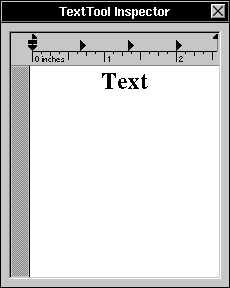 |
| Type the text you want to insert in the document window. Use the Font panel to set the font attributes and size of the text. (You may also want to use commands in the Text menu to format the text.) Then select the Text tool and click in the document window to insert the text in the document.
Zooming In on a Document When you're doing detail work on an image that's only 48 pixels across, you may find yourself wishing you had a magnifying glass. If you start feeling this way, choose the ObeseBits command in the Tools menu to bring up the ObeseBits panel. |
| 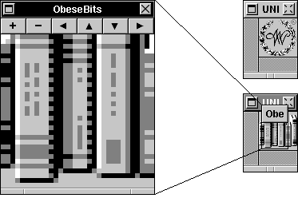 |
| This panel magnifies the image in the main window, and lets you zoom in or out (that is, increase or decrease the degree of magnification). The buttons along the top of the panel give you the control you need--use the plus and minus buttons to zoom in or out, and the arrow buttons to change the portion of the image being displayed.
There are actually two ObeseBits panels, as shown in the figure. The big panel is for editing; the small panel sits over the document window and shows the exact portion of the image that's contained in the big panel. You can drag the small panel by its title bar, thereby changing the portion of the image being displayed in the panel. The ObeseBits panel associates itself with whatever window is the main window. Clicking the document containing the Webster icon in the figure, for example, would cause the small ObeseBits panel to jump to that document window. The contents of the big panel would change accordingly. Note: Although the drawing tools in the Tools panel can be used directly in the ObeseBits panel, the result isn't always intuitive. For example, the size of the Brush cursor doesn't accurately represent the brush size that's used when stroking the brush. Use the Undo command in the Edit menu to undo any changes that you regret making.
Changing the Attributes of a Document After you've created a document or opened an existing document, you may find it necessary to change its size, format, or other characteristics. For example, you might decide to add alpha to a document that doesn't have it. To make such changes, first click the document window to make sure it's the main window. Then open the Document Layout panel by choosing the Document Layout command in the Format menu. The Document Layout panel is identical to the New Document layout panel that was described earlier. The only difference is that this panel is used to change the attributes of an existing document, rather than determine the attributes of a new document. Note: If you set new default attributes in the Document Layout panel, these become the default attributes for the New Document layout panel as well.
Working with Multiple-Icon Documents One Icon Builder document (that is, one TIFF file) can contain more than one icon. This is typically the case, for example, when you want to have one icon for color monitors and another for grayscale monitors--if the two icons are in the same TIFF file, the appropriate icon is displayed automatically on each type of monitor, without any work on your part. To create a multiple-icon document (or to change an existing single-icon document to a multiple-icon document), select the desired depth settings in the New Document panel (or the Document Layout panel). Then click OK. Use the pop-up list that appears in the lower right corner of a multiple-icon document window to access the various icons. If you create a multiple-icon document, remember that you have to edit each icon. When you save the document, all the icons in the document are saved--not just the one that's currently visible in the document window. |
| Icon Builder Command Reference |
| This section describes the application-specific menus and commands available in Icon Builder. For descriptions of standard menus and commands, see the User's Guide.
Commands in the Main Menu Icon Builder's main menu contains the standard Edit, Windows, Print, Services, Hide, and Quit commands. The Document, Format, and Tools commands display submenus that are described in the following sections. |
| Document | Displays a menu of commands for creating, opening, and saving document windows. See "Commands in the Document Menu." | |
| Format | Contains commands for opening the standard Font and Text menus, plus the Document Layout command for specifying the layout of the document in the main window. See "Commands in the Format Menu." | |
| Tools | Contains commands for opening a panel containing the tools available for use in creating an icon. See "Commands in the Tools Menu." |
| Commands in the Document Menu
Icon Builder's Document menu provides the following commands. |
| Command | Description | |
| Open | Opens an existing document window. See "Opening an Existing Document." | |
| New | Opens a new document window using the default attributes. See "Creating a New Document." | |
| New Layout | Displays a panel that lets you change the default attributes used in creating a new document. See "Creating a New Document." | |
| Save, Save As | Saves a document (consisting of one or more TIFF images) to a TIFF file. See "Saving a Document." | |
| Revert to Saved | Undoes the changes that have been made since the last time the document was saved. |
| Commands in the Format Menu
Icon Builder's Format menu contains menus of standard font and text commands, which can be used to affect the appearance of text used in Icon Builder. |
| Command | Description | |
| Font | Opens a menu of standard Font commands, which you use to set the font characteristics of the selected text in the TextTool inspector. | |
| Text | Opens a menu of standard Text commands, which you use to set the attributes of the selected text in the TextTool inspector. | |
| Document Layout | Displays the Document Layout panel, which you use to change the attributes of a document window. See "Changing the Attributes of a Document." |
| Commands in the Tools Menu
The Tools menu contains commands for accessing the primary tools provided in Icon Builder. |
| Command | Description | |
| Inspector | Opens the Inspector panel, which you use to change the appearance and behavior of the available tools. See "Using the Tools Inspector." | |
| Tools | Opens the Tools panel, which you use to select among available tools. See "Using Icon Builder Tools." | |
| Colors | Opens the standard Colors panel, which you use to choose color or grayscale values. | |
| Obese Bits | Opens the ObeseBits panel, which you use to magnify the contents of a document window. See "Zooming In on a Document." | |
| Load Tool | Opens the Load Tool panel, which you use to load a nonnative tool located somewhere on the file system. |